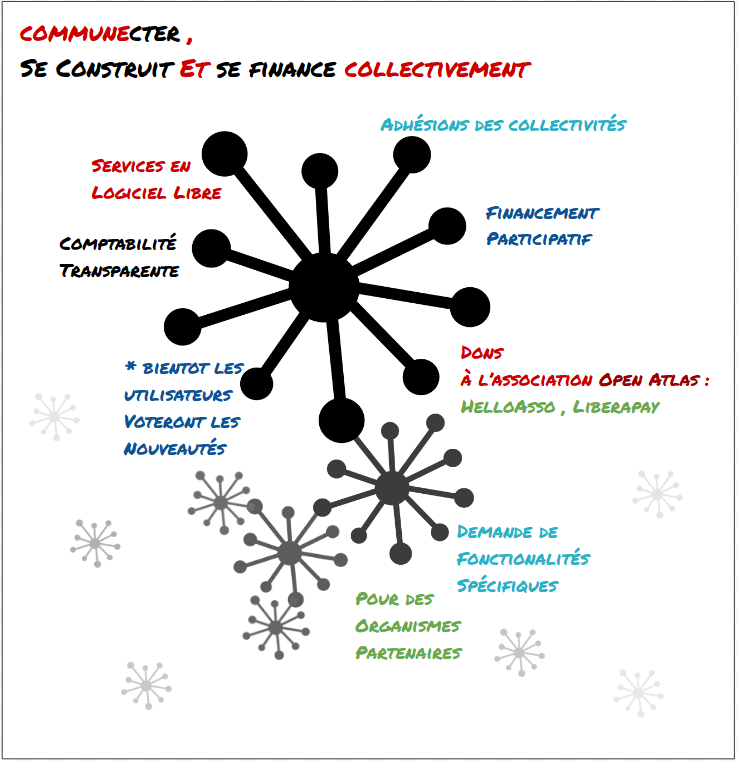
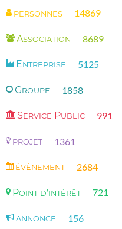
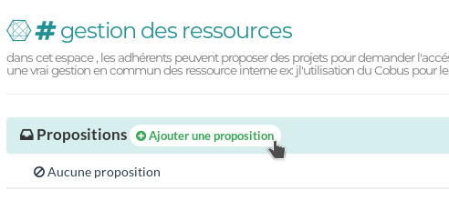

COMMUNECTER POUR ALTERNATIBA
Face aux défis environnementaux de notre époque, les associations telles qu'Alternatiba participent à la construction d’un avenir plus solidaire et plus juste. COmmunecter se met au service de ces acteurs de terrain en facilitant l'échange, la mutualisation et l'entraide.
Partie 1 : Le projet
Modèle économique
Usages
Partie 2 : La plateforme
1 - Participer à l'activité locale
2 - S'organiser au sein de sa communauté
Partie 3 : communecter son groupe local
Créez-vous un compte sur communecter.org et suivez les indications du diaporama étape par étape.
tom@communecter.org pour toutes questions.Commencez par référencer votre association. Ça ne prends que quelques secondes : allez-y !

Invitez les membres les plus actifs de votre communauté grâce au bouton "Inviter des membres". Si la personne n'est pas sur communecter rentrez son mail et une invitation lui sera envoyée.

Utilisez la messagerie instantanée pour discuter entre vous.

Publiez un message. Un simple "Bonjour" avec un lien vers votre site est un bon début. Cet espace permet de partager votre actualité.

Ajoutez vos évènements, comme la prochaine rencontre entre bénévoles ou un évènement auquel vous allez participer.
Partagez vos projets et lancez un appel à bénévole ! Chaque projet possède une communauté et une messagerie propre.

Lancez un vote. Il peut par exemple porter sur l'usage de COmmunecter au sein de votre organisation : "Pensez-vous que communecter répond à notre besoin ?".
Répartissez-vous les tâches

Affichez vos valeurs

L'usage de COmmunecter devient optimal quand d'autres acteurs locaux l'utilise. Rejoignez les ambassadeurs et nous vous aiderons à développer l'usage de COmmunecter au sein de votre association et avec votre public.
Partie 4 : communecter son territoire
Un terrain propice ?
- Volontés de faire réseau
- Projets communs
- Réseau large
Partie 5 : contribuer
Financierement
Bénévolat
Nous contacter
- communecter.org/#@pixelhumain
- chat.communecter.org
- tom@communecter.org / 06 46 11 84 93
- contact@communecter.org